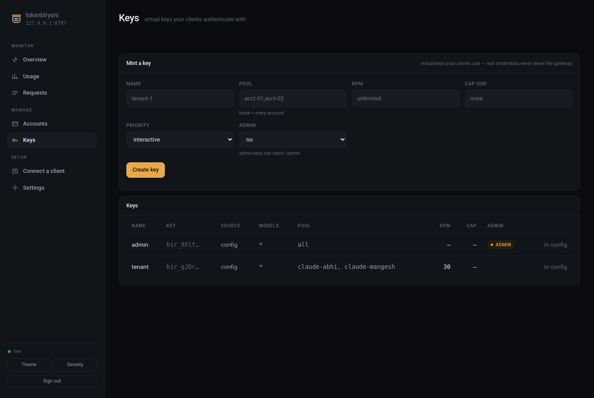
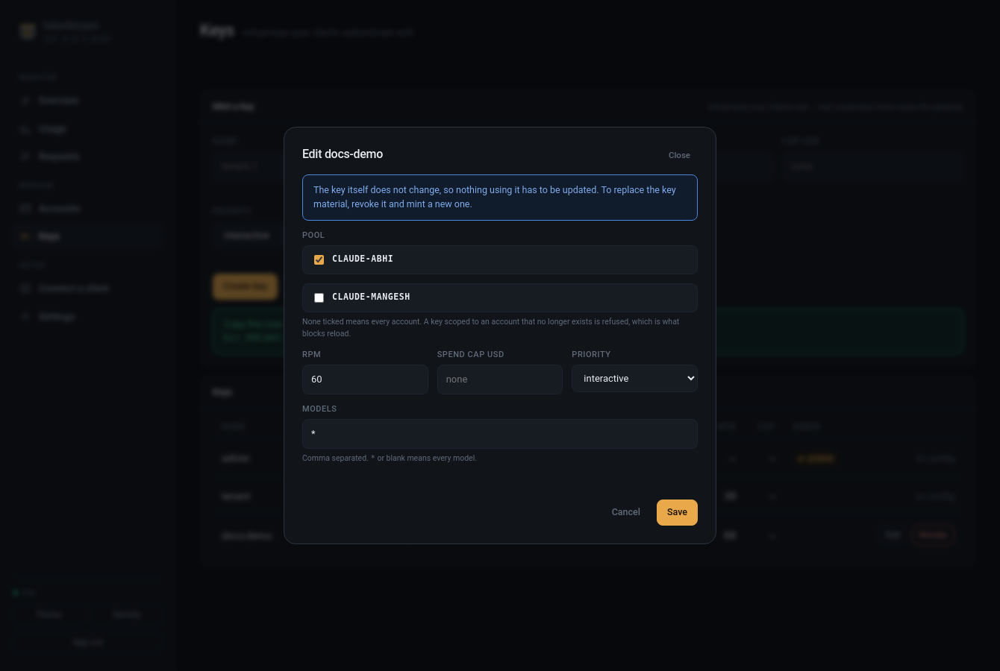
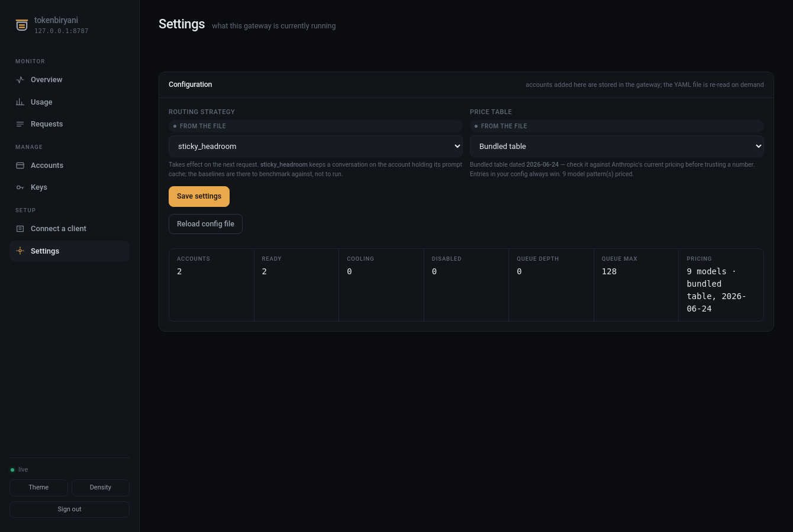
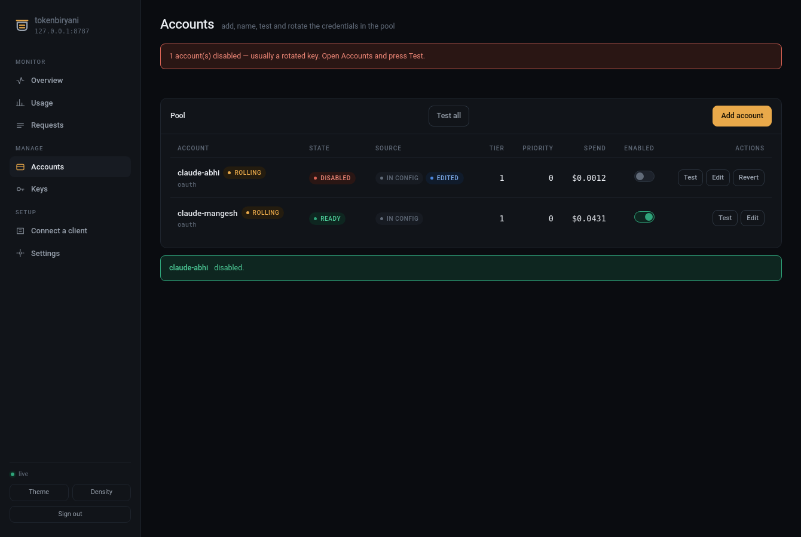

Operating¶
The console¶
http://localhost:8787/console — pool, capacity horizon, live request feed, routing
inspector, per-account detail, key management.
One server-rendered HTML file inside the package: no build step, and no Node toolchain
added to a pipx install. The shell carries no data and needs no key; it asks for an
admin key on first load and keeps it in that browser only.
The CLI¶
tokenbiryani status # the pool
tokenbiryani status --json # same data, for scripts
tokenbiryani strategies # what this install can route with
tokenbiryani keygen # a new virtual key
status reads TOKENBIRYANI_URL and ANTHROPIC_AUTH_TOKEN, and respects NO_COLOR.
Endpoints¶
POST /v1/messages |
Messages API, streaming and not |
POST /v1/messages/count_tokens, GET /v1/models |
passthrough |
GET /healthz |
200 while any account is ready |
GET /console |
the operator console |
GET /admin/status |
pool snapshot |
GET /admin/accounts/{id} |
one account, with errors by class |
GET /admin/requests/{id} |
why that request went where it did |
GET /admin/horizon |
projected capacity for the next hour |
GET /admin/events |
live SSE feed |
POST /admin/keys, PATCH /admin/keys/{name}, DELETE /admin/keys/{name} |
mint, rescope and revoke |
GET /admin/settings, POST /admin/settings |
read and change routing strategy and price table |
PATCH /admin/accounts/{id}, DELETE /admin/accounts/{id}/override |
change a config account's operational fields, and hand it back to the file |
GET /admin/oauth/detect |
Claude Code logins on this machine — path, subscription, expiry; never the token |
POST /admin/reload |
re-read the config file |
Managing keys at runtime¶
curl -sX POST localhost:8787/admin/keys -H "x-api-key: $ADMIN_KEY" \
-d '{"name":"tenant-1","pool":["acct-02"],"rpm":60,"spend_cap_usd":5}'

The plaintext appears once, in that response. Minted keys are stored hashed, so a leaked state store is not a leaked key, and they live in the shared store — one instance honours a key another minted.
Keys declared in the config file belong to the file; the API will not revoke them.

A key's scope can be changed without reissuing it:
curl -sX PATCH localhost:8787/admin/keys/tenant-1 -H "x-api-key: $ADMIN_KEY" \
-d '{"pool":["acct-03"],"rpm":null}'
Reissuing breaks every client already holding the key, and the usual reason to want a
change is duller than that: a key scoped at an account that has since been removed,
which sits there harmlessly until it blocks the next config reload. null clears a
limit; the key material never changes.
Changing settings without an editor¶

Two gateway-wide settings can be changed from the console or the API, and are stored in the state store rather than written back to your config file:
curl -sX POST localhost:8787/admin/settings -H "x-api-key: $ADMIN_KEY" \
-d '{"strategy":"cost_tiered"}'
They are applied again after every reload, so editing an unrelated line in
tokenbiryani.yaml cannot silently revert them, and the Settings screen tags each
value with where it came from — the file, or here. Everything else remains a config
file decision on purpose.
Accounts the config file declares¶
The file keeps the credential, the type and the base URL: an override that could
repoint an account at another host would make the file a lie rather than an authority.
What the console can change on one — because it is what an operator needs at 3am —
is enabled, name, cost_tier, priority, spend_cap_usd, models and
max_concurrency. Those are stored in the gateway, survive a reload, and are undone
in one step:

curl -sX DELETE localhost:8787/admin/accounts/acct-01/override -H "x-api-key: $ADMIN_KEY"
Request headers¶
| Header | |
|---|---|
X-TokenBiryani-Session |
pin a conversation to one affinity key |
X-TokenBiryani-Priority |
interactive (default) or batch |
X-TokenBiryani-Max-Wait |
seconds to wait for capacity |
A client can shorten its own wait budget but never extend it past the operator's ceiling.
Privacy¶
Prompt bodies are never logged unless observability.log_bodies is explicitly
enabled. Logs carry ids, accounts, tokens, latency and cost — the accounting, not the
content.